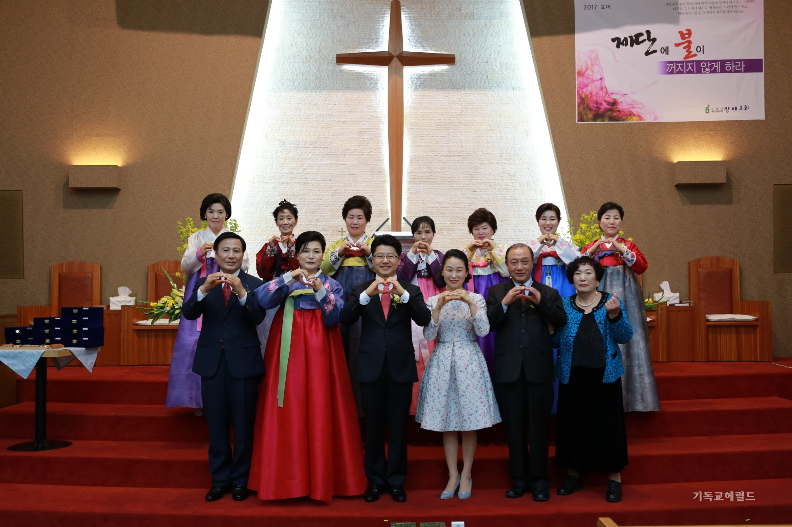

방배성결교회는 1975년에 설립된 교회로 방배동 카페골목
초입에 위치하고 있으며, 기독교대한성렬교회 성결교단에 소속된 건전하고 건강한 교회입니다.
저희 교회는 온 성도들이 성령의 임재가 가득한 예배를 통해 회복과 변화를 경험하고,
열방을 품고 선교하며, 진리의 말씀으로 훈련받아
하나님 나라의 제자들로 성장해나가는 복음선포적 공동체가 되기를 소망하는 교회입니다.
담임 목사
장상호 목사께서는 이웃을 위해 항상 기도하고 교인과 소통으로 다가가는 목사입니다.
예배 시간
예배
요일
시간
주일오전예배
일요일
11:00~12:00
목장예배
일요일
13:10~14:10
수요기도회
수요일
19:30~20:30
새벽기도회
월~토
5:30~6:30
유치부예배
일요일
10:40~12:00
어린이부예배
일요일
10:00~10:40
학생부예배
일요일
9:40~10:40
청년부예배
일요일
13:10~14:10
오시는 길
-주소: 서울특별시 서초구 방배로35길 29
-교통편: 내방역(7호선) 2번출구 > 서초15 버스/이수중앙시장 정류장